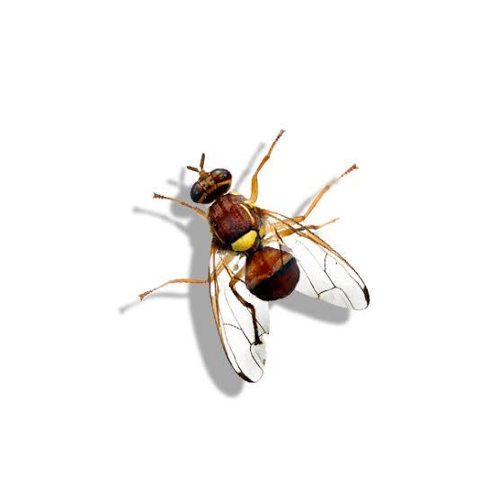
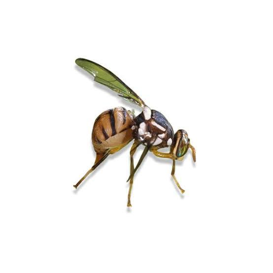

Bactrocera
30 October 2026
Described by Macquart in 1835. Primarily Indo-Pacific in distribution, with several species now established as invasive pests in Africa, Europe, and the Americas.
Tribe: Dacini | Species: ~600

1 Bactrocera dorsalis (Hendel, 1912)
Common name: Oriental fruit fly
Economic importance: Major invasive pest of mango, guava, papaya, and hundreds of other hosts. Established in Africa after 2003.

1.1 Research
1.1.1 Gut Microbiota
Researchers: Qiongyi Zhou, Hongyu Zhang
Read paper →
Researchers: Abir Hafsi, Massimiliano Virgilio
Read paper →
Researchers: Xiaoyun Jia, Zihua Zhao
Read paper →
Researchers: Tian Zeng, Yi-juan Xu
Read paper →
Researchers: Kamil Kabir, Hongyu Zhang
Read paper →
Researchers: Yuxin Yang, Zihua Zhao
Read paper →
Researchers: Muyang He, Yonghao Lu
Read paper →
1.1.2 Pest Control Applications
Researchers: B. Wei, Y. Liu
Read paper →
Researchers: Bing Xie, Bin Song
Read paper →
Researchers: Guijian Zhang, Changying Niu
Read paper →
Researchers: Gelana Keno Beyene, Gebissa Yigezu
Affiliation: (TBC — Ethiopia)
Read paper →
Researchers: Jingpeng Xie, Fengqin Cao
Journal: Journal of Pest Science
Read paper →
Researchers: Xin Zhang, Tao Wen
Journal: (Postharvest Biology and Technology)
Read paper →
1.1.3 Gene Drives
Researchers: Chrysanthi Ioannidou, Kostas Bourtzis
Read paper →
Researchers: (first author TBC), (last author TBC)
Read paper →
Researchers: (first author TBC), (last author TBC)
Read paper →
1.1.4 Ecology & Behaviour
- Dispersal & Migration
- Thermal Biology
- Ecotoxicology
- Sensory Biology & Olfaction
- Distribution & Surveillance
Researchers: Naoya Hidaka, Akira Otuka
Read paper →
Researchers: Vasilis G. Rodovitis, Nikos T. Papadopoulos
Read paper →
Researchers: Wei Zhao, Dan-Dan Wei
Journal: Ecotoxicology and Environmental Safety
Read paper →
Researchers: Wei Liu, Guirong Wang
Journal: Advanced Science
Read paper →
Researchers: Yuhua Zhang, Xin Yi
Journal: PNAS
Read paper →
Researchers: Saleem Jaffar, Yongyue Lu
Affiliation: South China Agricultural University, Guangzhou, China
Journal: * Insect Transcriptomics*
Read paper →
Researchers: Denish Oyaro Onen, Jeninah Karungi
Affiliation: Makerere University, Uganda
Read paper →
Researchers: Daria Rzepecka, Sybren Vos
Affiliation: European Food Safety Authority (EFSA)
Read paper →
1.1.5 Transcriptomics
No papers added yet.
1.1.6 Researchers
Affiliation: Huazhong Agricultural University, China
Themes: Gut microbiota, immune defence, RNAi
ResearchGate →
Affiliation: China Agricultural University
Themes: Life-history, diet, gut microbiota composition
Google Scholar →
Affiliation: Royal Museum for Central Africa, Belgium
Themes: Phylogenetics, population genetics, microbiome adaptation
Affiliation →
Google Scholar →
Affiliation: (TBC)
Themes: Gut homeostasis, ROS regulation
ResearchGate →
Affiliation: (TBC)
Themes: Cuticle microbiota, immune defence, fungal resistance
ORCID →
Affiliation: Institute of Zoology, Chinese Academy of Sciences
Themes: Sensory biology, olfaction, chemosensory evolution
Affiliation: University of Thessaly, Greece
Themes: Thermal biology, dispersal, life history
Affiliation: Southwest University, China
Themes: Ecotoxicology, nucleic acid pesticides, development